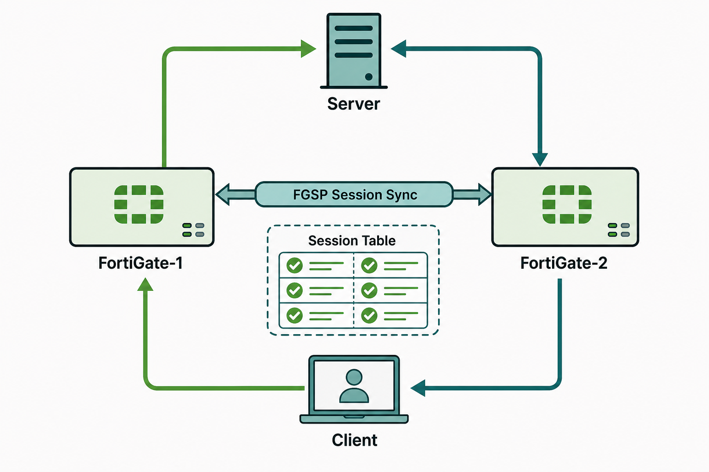

FGSP — Session Sync for Independently-Operating FortiGates
The FortiGate Session Life Support Protocol (FGSP) addresses a problem that FGCP cannot: what happens when network topology forces traffic to flow asymmetrically across multiple FortiGate units? In an FGCP cluster, all traffic converges on the primary unit — asymmetric flows don't exist by design. But in carrier-grade networks, data center fabrics using ECMP routing, or any environment where the path of a packet's return journey cannot be guaranteed to match its forward journey, a stateful firewall without session synchronization will drop traffic. FGSP solves this by sharing the session table between two FortiGate units that otherwise operate completely independently.
The critical distinction between FGSP and FGCP is the degree of coupling between the participating devices. In FGCP, the two units form a cluster — they share a cluster identity, one is primary and the other is secondary, configurations are synchronized, and failover is automatic. In FGSP, each FortiGate retains its own complete identity: its own hostname, its own management IP, its own routing table, its own policy database, and its own configuration. FGSP does not synchronize configurations — it only synchronizes session state. This means you can run two FortiGates with entirely different configurations in an FGSP pair, which can be useful but also means there is no automatic failover — if one unit fails, the other continues processing traffic but does not automatically take over the failed unit's responsibilities.
Configuring FGSP requires defining the peer unit's IP address on each FortiGate, enabling session synchronization, and optionally configuring filters to limit which session types are synchronized. Not every session needs to be synchronized — in a high-throughput environment, synchronizing short-lived DNS sessions would create unnecessary overhead. Most deployments synchronize only long-lived TCP sessions and omit UDP sessions below a configurable duration threshold. FGSP can also be combined with FGCP in certain deployment architectures — for example, two FGCP clusters (each with their own primary and secondary) can use FGSP to synchronize sessions between the clusters, providing both intra-cluster failover and inter-cluster session consistency.

Come ready to answer these in the Socratic session
-
1What is FGSP and fundamentally how does it differ from FGCP?
-
2In what network topology is FGSP required — what routing condition makes FGCP insufficient?
-
3What does FGSP synchronize between devices — what is shared and what is not?
-
4How does FGSP handle the case where one unit becomes unreachable — is there automatic failover?
-
5What is the difference between FGSP standalone clustering and FGCP HA clustering in terms of device independence?
-
6Can FGSP and FGCP be used on the same FortiGate — if so, when would you combine them?
-
7What configuration is required on both FortiGates to establish FGSP synchronization?